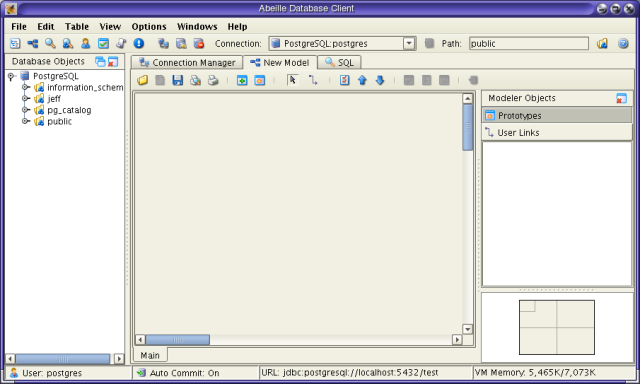

version 2.0
| Contents | |
| Requirements | |
| Installation | |
| Connection Management | |
| Main Application Window | |
| Modeler | |
| SQL Editor | |
| Query Results Window and Export | |
| Form Views | |
| Query Builder | |
| License |
Abeille has been tested on Red Hat Linux 8.0 and Microsoft Windows 2000/XP.
Abeille has been tested with the following databases:| Oracle 9i, 8i |
| DB2 V8.1 |
| DaffodilDb v2.2 |
| PostgreSQL 7.2.x, 7.3.x |
| MySQL 3.23, 4.0 |
| McKOI 1.0 |
| HSQLDB 1.7.1 |
| PointBase 4.6 |
| JDataStore 6.0 |
| Sybase 12.5 |
Downloading and Installing Abeille
Abeille requires Java 1.4 or higher. You can download Java from: http://www.java.com.
Download and unzip the file abeille20.zip. This zip
archive contains the following files:
| dbclient.jar | The JAR file for the application. |
| README.txt | The README file for Abeille. |
| documentation/ | The documentation directory. |
| You can now start Abeille. Simply type: | java -jar dbclient.jar |
When Abeille is run for the first time, the first window you should see is the connection manager dialog. Here you must define the connection parameters for the database that you wish to connect to. Select Create New Connection button.
When you click the create connection button, a dialog is displayed that allows you to select a database and enter the connection parameters for that database. The basic connection view assumes you are using the default JBDC drivers supplied by your database vendor. If you wish to use a 3rd party JDBC driver, you must click the Advanced check box and manually enter the JDBC information.
|
||||||||||||
|
*You don't have to supply the driver name in this view. Abeille assumes the default driver supplied by your vendor. |
The following table lists the default JDBC information for each database.
| Database | Driver | Port | URL |
| DB2* | COM.ibm.db2.jdbc.net.DB2Driver | 6789 | jdbc:db2://<server>:<port>/<name> |
| HSQLDB | org.hsqldb.jdbcDriver | 9001 | jdbc:hsqldb:hsql://<server>:<port> |
| McKOI | com.mckoi.JDBCDriver | 9157 | jdbc:mckoi://<server>:<port> |
| MySQL | com.mysql.jdbc.Driver | 3306 | jdbc:mysql://<server>:<port>/<name> |
| Oracle | oracle.jdbc.driver.OracleDriver | 1521 | jdbc:oracle:thin:@<server>:<port>:<name> |
| PostgreSQL | org.postgresql.Driver | 5432 | jdbc:postgresql://<server>:<port>/<name> |
| Sybase | com.sybase.jdbc2.jdbc.SybDriver | jdbc:sybase:Tds:<server>:<port>/<name> | |
| Pointbase | com.pointbase.jdbc.jdbcUniversalDriver | 9092 | jdbc:pointbase:server://<server>:<port>/<name> |
The following table lists the default JAR files supplied by each database vendor.
|
||||||||||||||||||
|
*DB2 requires two JAR files. Because of this, you need to use the Advanced dialog to configure DB2 connections. |
If you are using DB2 or wish to use a 3rd party JDBC driver, then you must use the Advanced view. The advanced connection view allows you to specify any JDBC driver for the connection.
|
||||||||||
Once you've defined your connection, press Ok on the dialog. At this point, the login dialog should be displayed on the screen. You can supply a user name and password to login and continue with the application. Once you've successfully connected to your database, the main application window will be displayed.
When Abeille connects to a database, four major application windows are displayed: Connection Manager, Object Tree, Model View, and SQL Editor. The Object Tree displays tables and views for each database. The Model View displays existing and prototype tables. Initially, the model view is empty. You can add tables to the view by clicking the Add Table button on the toolbar or you can simply drag and drop tables from the object view. Finally, the SQL editor allows you to perform ad-hoc queries.

| Displays the Object Frame for the active connection. This includes all tables and views. Abeille supports sequences and functions in PostreSQL. | |
| Displays the Model View for the active connection. The model view graphically shows tables and relationships between tables. It also shows tables that are currently being modeled and user defined links. | |
| Displays the SQL Editor for the active connection. | |
| Displays the Table Properties for the active connection. The user can select a table in the dialog and inspect the table's columns and other properties. | |
| Displays the application log. This view shows all SQL statements that have been executed for all connections. | |
| Invokes the login dialog. Allows a user to open a new database connection in the application. | |
| Disconnects from the active database. | |
| Invokes the System Information dialog. This dialog shows properties of the current JDBC driver and database. | |
| Makes the next connection
active. |
Object View
The Object View displays all user tables in the database. By right clicking on a table, you can invoke several common operations in the application.
Table Properties displays the table properties dialog. This dialog allows the user to see the table's metadata.
Form View displays the table in a form view. This allows the user to query, add, modify and delete data in the table. Form views also allow the user to navigate to related tables simply by clicking the column name in the form.
Table Query (select *) performs a select * against the selected table. The results are displayed in the Query Results window.
Reload. Allows the user to reload the table. This is useful if the table structure has changed by either a SQL command or another user.